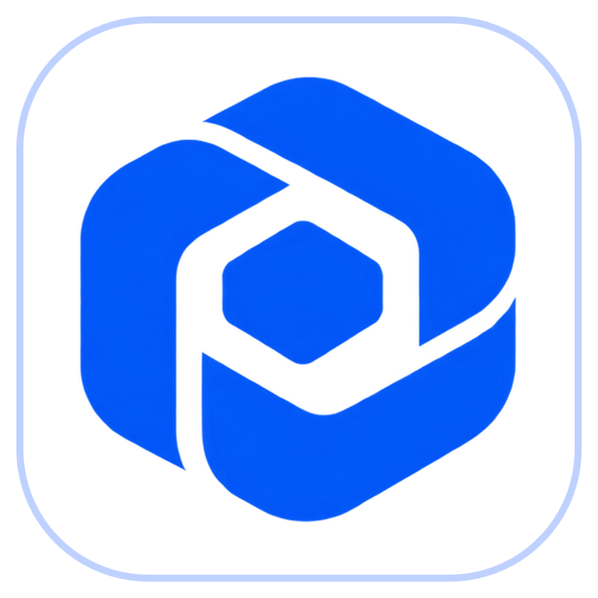

Preparing Tessaris
Loading your local workspace…
Tessaris
Model
Choose in Connections
Open Pilot Dashboard
LOCAL PILOT
Pilot control centre
×
Pilot unavailable
Microphone off
TV unavailable
Checking the local Pilot service…
Open Pilot Dashboard
Turn microphone on
Reconnect TV
Open Games
Open AI TV
Retry starting Pilot
Local